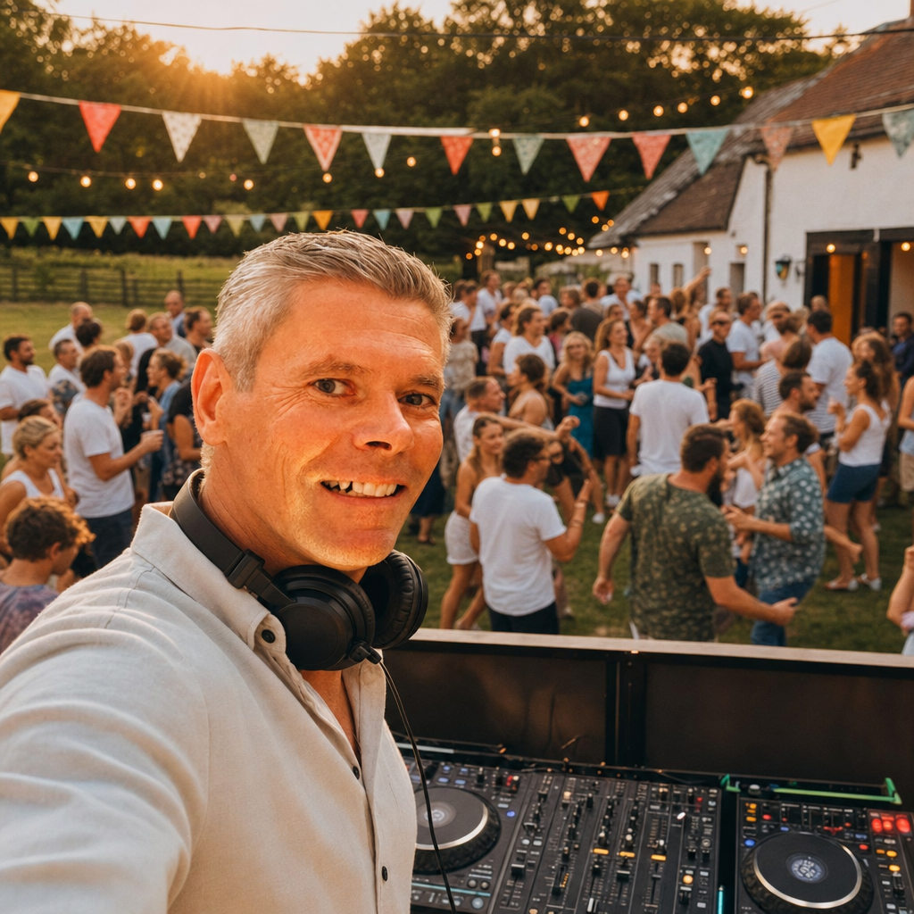

DJ Jakob is een allround DJ met roots in het echte werk. Opgegroeid in de platencultuur van de jaren '90, gedraaid op vinyl en cd's bij jeugdvereniging Zibbith. Daarna als resident DJ bij studentenvereniging Gremio Unio in Den Bosch, waar hij de nacht levend hield.
Sinds 2020 is hij terug op de decks — en voller dan ooit. Van groep-8 eindfuiven en 50-jarige feestjes tot bruiloften en themadisco's: hij leest de zaal, voelt de energie en zorgt dat niemand stil blijft staan.
De creatieve energie, kennis en kunde van DJ Jakob laat feestelingen ervaren dat het leven één groot feest is.
"Benieuwd naar onze klik? Informeer vrijblijvend naar de mogelijkheden."
— DJ Jakob
Opgegroeid in de gouden jaren van vinyl en cd's. Bij jeugdvereniging Zibbith legde DJ Jakob de basis: draaien op echte platen, een zaal leren lezen en de liefde voor muziek ontdekken die hem nooit meer losgelaten heeft.
Als vaste resident DJ bij Gremio Unio in Den Bosch hield hij de nacht levend. Week na week, zaal na zaal — hier verfijnde hij zijn gevoel voor energie, timing en de kunst van de perfecte mix.
Sinds 2020 actief voor bruiloften, 40- en 50-jarige feesten, groep-8 eindfuiven en themadisco's. Van de Bossche kroeg tot aan jouw achtertuin: elk feestelijk moment uniek gemaakt met ervaring, passie en een mix die meegaat met de crowd.
Informeer vrijblijvend naar de mogelijkheden. Geen vaste pakketten — gewoon een eerlijk gesprek over wat jij wilt.
Neem contact op